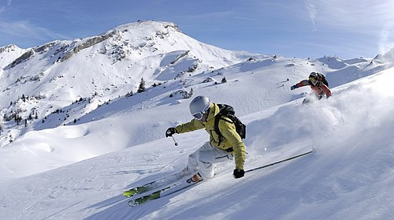
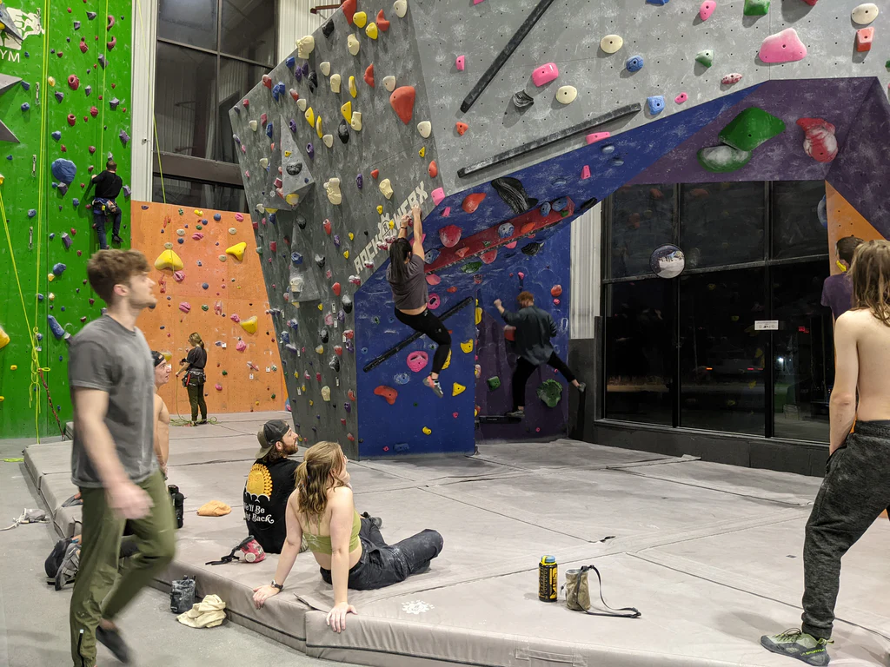
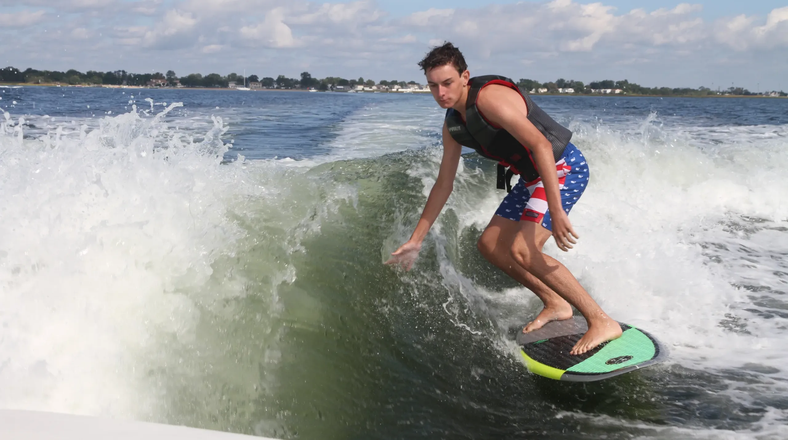
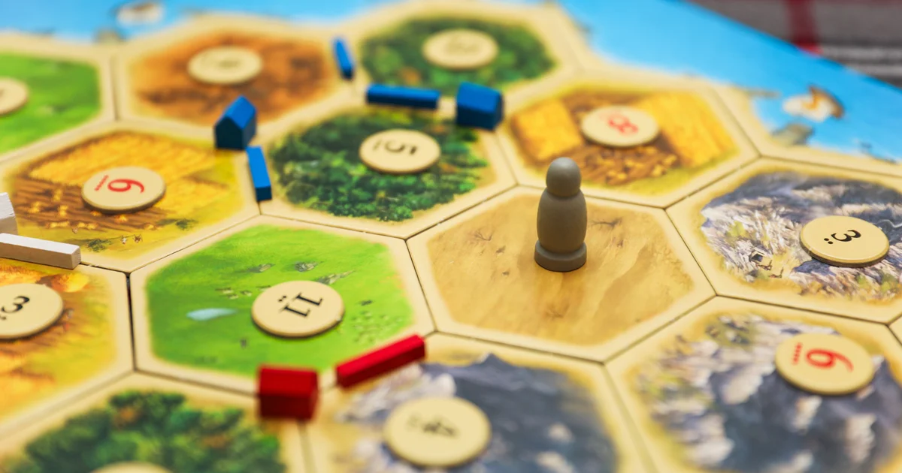
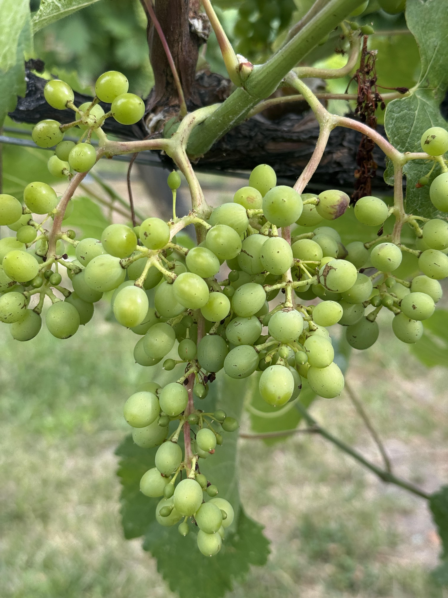

Core Skills
- Java, Python, and C programming
- SQL database basics
- Using Git and GitHub for projects
- API development basics
- Understanding of core UI/UX design principles
Career Summary
Experience & Projects
| Role / Project | Organization / Course | Duration | Key Contributions | Technologies / Skills Used |
|---|---|---|---|---|
| Banquet Server (Seasonal) | Seattle Tennis Club | Summers 2023-2025 | Provided high-quality customer service during events; coordinated with staff to ensure smooth operations | Teamwork, communication, time management |
| SEA-PHAGES Undergraduate Researcher | Gonzaga University Biology Dept. | Sept 2024 - Present | Conduct phage genome research; isolate and analyze bacteriophage DNA; present findings in a research poster | Bioinformatics tools, Python, DNA sequencing software |
| Database Design Project | CPSC 321 - Databases | Fall 2024 | Designed a relational database for phage research; implemented SQL schema and queries; documented ER diagram | SQL, PostgreSQL, ER modeling tools |
| Groundskeeper | Sand Point Country Club | Summer 2022 | Maintained golf course grounds and landscaping; operated equipment and supported grounds crew tasks | Outdoor maintenance, equipment operation, teamwork |
Notable Achievements
- Completed multiple full-semester software projects in Java, Python, and C as part of Gonzaga coursework
- Collaborated in small teams on database and operating-system projects, following Agile-style workflows
- Gained hands-on experience with Git and GitHub for version control and project collaboration
Education & Qualifications
Educational Background
| Degree | Institution | Expected Graduation | GPA |
|---|---|---|---|
| Bachelor of Science in Computer Science | Gonzaga University | May 2025 | 3.6 / 4.0 |
Languages
- English: Native Speaker
Interests & Hobbies
Outside of my professional life, I enjoy staying active and creative through a variety of hobbies. These activities help me maintain balance, build skills, and stay engaged.
-
Alpine Skiing
Enjoy downhill skiing in the Pacific Northwest
 -
Rock Climbing
Indoor bouldering and outdoor sport climbing
 -
Water Sports
Recreational boating, kayaking, and other water-based activities
 -
Gaming
Strategy games, especially Settlers of Catan, and puzzle games

(Click the image to visit the official Settlers of Catan website) -
Photography
Landscape and outdoor photography
